The courses I took on this study abroad were REL 300: Religion, Art, and Identity in Medieval Sicily and REL 490: Imagining Identity in the Medieval Islamic World. These are my final essays synthesizing what was learned as well as my more informal responses to/thoughts about the texts read each week.
In 300, we encountered various historical articles as well as primary source documents to elucidate how the island was for its various, diverse populations in the period between 900 and 1300 C.E. 490 focused on the broader academic study of religion and when the etic (outsider, like a religious scholar) or emic (insider, primary source) approach is appropriate.
The d’Hauteville brothers of what is modern-day France conquered southern Italy in the early 1100s and proceeded to establish authority in a way that some find surprising. Rather than impose their culture on their new subjects akin to the colonization of the Americas by Spain and Britain, the first Norman king of Sicily, Roger II d’Hauteville, set a precedent of using local culture and religious systems to affirm his legitimacy. This is particularly noteworthy because prior to Roger II’s family, the island was ruled for two hundred years by an Islamic empire of nearby Africa, who understandably left a large Muslim population in their wake. Realizing perhaps that the demographic was too large to force conversion, the Christian man embraced Islamic art and symbols in his new palatial and ecclesiastical constructions to create the illusion of a sort of Mandate of Heaven.1 That term is usually associated with Chinese dynasties but is similarly applicable here, as a concept that the divine force has mandated and supports the regime in power, else they would not have attained power. As an example, Dr. Alex Metcalfe of Lancaster University writes: “It was under Adelaide [Roger II’s mother] that coins were first issued with an overtly religious link made in Arabic between the faith and function of the ruler, asserting her claim to be the protector of the Christian faith.’” 2 Roger II and his successors similarly, tactfully claimed that gods of various religious traditions supported their dynasty through linguistic and visual means in the creation of structures such as, but not limited to, his palatine chapel and La Zisa castle as well as the reconstruction of churches-once-mosques like the Palermo Cathedral.
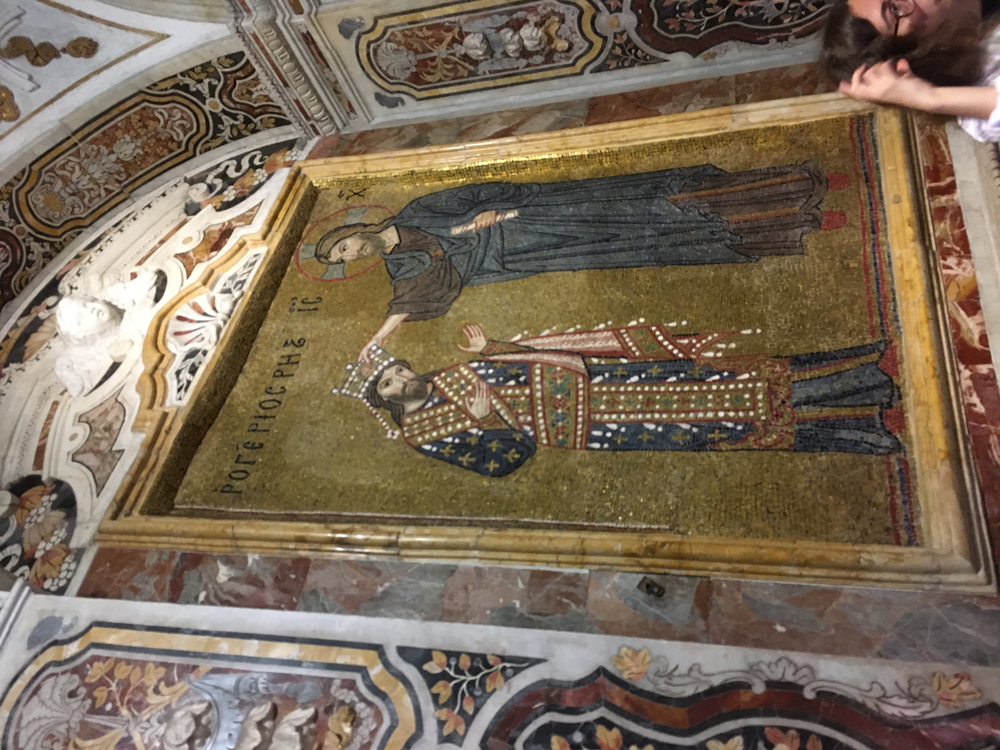
One of the many (indeed, multitudinous) records in the state archive in Palermo is a census document from the nearby Sicilian town of Cefalù written in Arabic, indicating that that was a dominant language of the time. Arabic can also be seen scrawled around eight-pointed stars on the mosque-style muqarnas ceiling of the Cappella Palatina, or Roger’s palatine chapel.3 It used to frame the entrance with a greeting that was likely “…an allusion to Fāṭimid protocols which ultimately related to a ritual performed by Muslim pilgrims to Mecca,” wherein they would kiss the corner of the palace/sacred site and marvel at its beauty.4 For it to be so prevalent in their architecture and monarchical documentation suggests that the Normans must have recognized value in the language. An artifact that now resides in Roger II’s La Zisa palace (whose name came from the Arabic Aziz, whose facade also sports fragments of Arabic script in relief) is a quadrilingual funerary marker (in Greek, Latin, Arabic, and a form of Hebrew) that could have only been made by the highly educated scholars of the king, particularly considering that each is not an exact translation but follows the conventions and customs of each culture.5
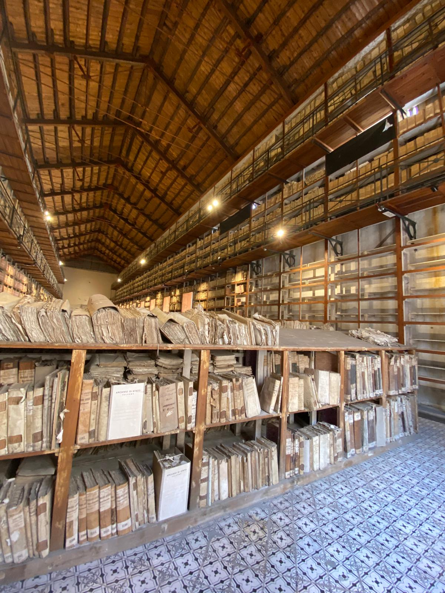
It seems the Normans thought that such linguistic prowess flaunted that they had power over many different groups of peoples, contrary to the aforementioned European colonizers in the Americas who tried to erase local culture, forcing assimilation and the speaking of English/Spanish. However, unlike the isolated American native tribes, Muslim empires were regarded throughout Europe as wealthy and sophisticated; so it is likely Spaniards gained less status for controlling the Aztec population than these Normans did for controlling a Muslim one.6 They even referred to Roger II indirectly in accordance with Islamic custom, similar to calling him “His Majesty.” Dr. Jeremy Johns notes: “…the [typical royal] title [translates to] ‘may God Most High perpetuate its height.’ But, although the Sicilian formula precisely copies the Fāṭimid title, it uses a completely different invocation… ‘may God raise the roof of its glory!’. While the Fāṭimid formula has no Qur’anic resonance, the Norman formula makes precise reference to one passage in the Qur’an…” 7 In plainer terms, someone well-versed in their culture tried to out-Muslim the Muslims, and to accomplish that he would have had to (and did) have them amongst his royal elite.8 “…officials, were attested as knowing Arabic, an observation which was regarded as… marvellous. In the Arab-Islamic world, this… distinguished them as more enlightened that barbarous Franks or crusaders.” 9
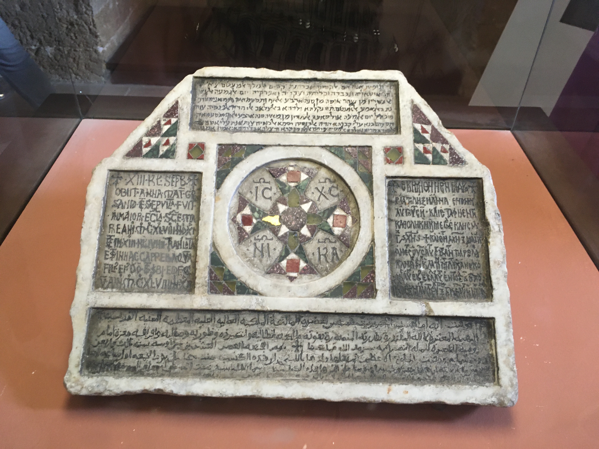
It is because of the Arab-Islamic world’s association with wealth and splendor that Roger II also appropriated more visual elements of their culture. An observation by medieval, Muslim traveler Ibn Jubayr: “…no Christian king is more given up to the delights of the realm, or more comfort and luxury-living. He [Roger II’s eventual successor, William II] is engrossed in the pleasures of his land… in a manner which resembles the Muslim kings.’” 10 They built “pleasure gardens” or elaborate royal grounds that were divided into quadrants with distinct, copious water features that drew on Qur’anic descriptions of what heavenly paradise looks like.11 This could in turn be interpreted by different peoples in different ways: a Northern European might have seen a luxurious space the likes of which they had never encountered, making them impressed with Roger II’s reign; while a Sicilian Muslim might have understood that Mandate of Heaven concept that their king had been able to create Allah’s paradise on earth. Equally awe-inspiring would have been that aforementioned muqarnas ceiling in the king’s chapel, made to look like stalactites covered in stars and religious icons, which was later replicated throughout the kingdom (albeit poorly by Christian craftsmen instead of the original traveling Muslim artisans).12 This list goes on, with a palatial air-conditioning system in La Zisa first invented by Muslim engineers; a royal menagerie with Saharan animals; a court of well-dressed Muslim concubines, dancers, and slave women (whose presence drew the ire of stricter, prejudiced, northern European Christians).13 Similar to the point before, in a continent where this was uncommon, the Islamic visual culture transformed into and meshed with a Sicilian visual culture, emphasizing the kingdom’s uniqueness and presence to its neighbors and occupants.
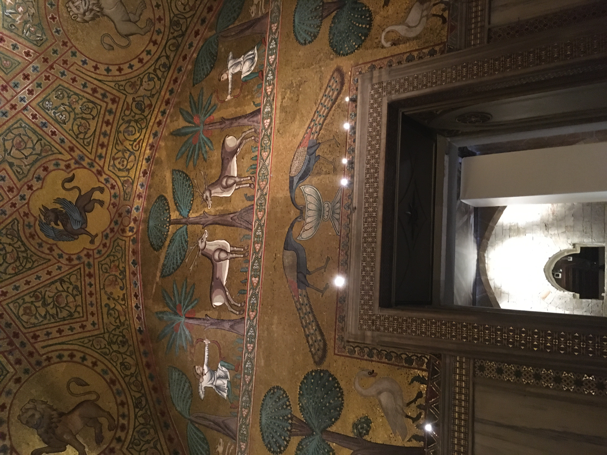
Overall, Sicily occupies a singular place in medieval history, with “[t]he material and visual culture of the new Norman monarchy… created above all through the importation of artists, craftsmen and scholars from outside the island — mosaicists from Byzantium, scribes from Fāṭimid Egypt, silk weavers from Byzantine Greece, porphyry-workers from Rome, sculptors from the Italian mainland and southern France, and so on.” 14 While this seemingly eager embrace of other, non-Christian cultures and customs has confused many scholars, I am personally forced to wonder if Roger II and family were not devoutly Christian so much as devoutly ambitious. Maybe their desire for status and luxury superseded the need of other famous historical Europeans to convert all they survey. Dr. Metcalfe again: “Indeed, there is a striking contrast between the early Normans of the Robert Guiscard [Roger II’s uncle, Adelaide’s brother-in-law] generation — rough-hewn, mercenary opportunists from impoverished, but upwardly aspiring, backgrounds — and the luxury-loving line of their royal heirs, who were able to revel in the satisfaction of almost every conceivable material need, fashioned to the highest standards of the day.” 15 Pardon the informality in paraphrasing, but why would a man who implies he “has outreached the stars,” who writes the equivalent of “Roger the magnificent! He's so great and Allah loves him! Bless his remarkable, unearthly chapel!” on his handcrafted ceiling want to give more power to a European congregation’s network of religious stewards?16 Why would he care if there were surviving columns with Qur’an inscriptions in the Palermo Cathedral or nearby La Martorana church? A monolithic marble column is expensive and shows power. To be so obviously taken from a mosque shows that much more power. As disgusting as this gross extravagance may be, it did have the benefit of valuing, for a time, diversity in an intolerant Europe; though not without all the consequent resulting tensions that eventually boiled over under Frederick II, leading to the exile and eventual genocide in 1300 C.E. of Sicilian Muslims in mainland Lucera, Italy.17
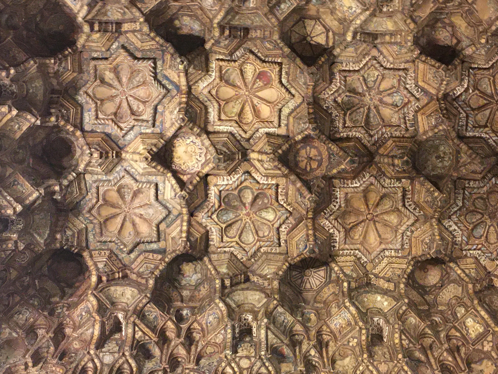
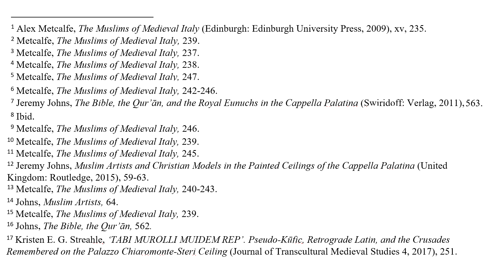
Perhaps the greatest challenge in developing something new, particularly religion, is that little we humans invent is truly novel and creative. After all, we are not (by most popular standards) deities ourselves, hence the search for an explanation to the hypercreative existence that is our world. Anyone who seeks to share a “new” unpopularized thought or establish a culture must do so using the same physical and linguistic ephemera that anyone else has. Consequently, this makes it difficult to distinguish where one group ends and another begins if, for example, artistic styles are too similar, or if rituals evolved out of and still bear strong resemblance to the “original.” 1 The religious student uses categorization labels like “Christianity” and “Islam” so that we may communicate effectively, but the scholar must begin to question when/where the line gets drawn around a community and if it is always a productive approach. This is particularly salient when studying history, as the surviving documentation rarely represents a cohesive view of the nuances of how people understood themselves within and between societal structures.2 In a place like medieval Sicily, where numerous heritages cohabited a space and (re)defined their identities in close intimacy with others, we would be wise to consider such points of Dr. Nancy Khalek of Brown University in her publication Damascus after the Muslim Conquest.3 Sicily’s Cappella Palatina and Palazzo Chiaromonte-Steri are quintessential instances of the scholarly dilemmas of certainty in taxonomy because of their inherent multicultural origins and the disagreement over how much we really know about them.
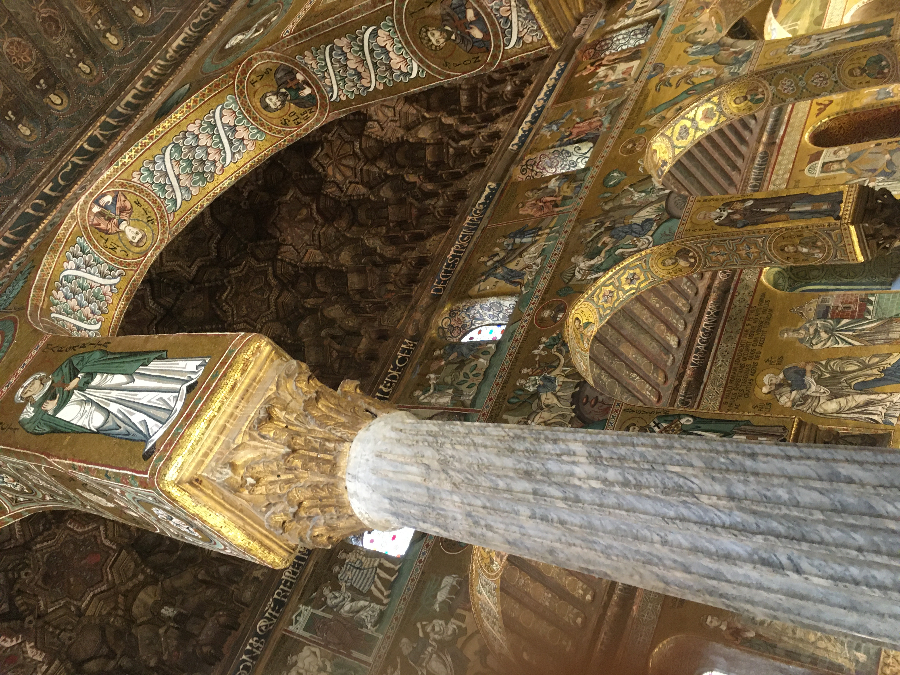
“If the Umayyads were good at anything, they were good at communicating to an audience,” Dr. Khalek writes of one of the first, largest Muslim caliphates to emerge after the time of Muhammad.4 We can corroborate this throughout history with other memorable leaders: Those who communicate charismatically amass more respect and power. But communication is also nonverbal and passive, as in the case of art and architecture. She continues: “…architectural sophistication was not the exclusive purview of a community to which [the caliph] did not belong: it was simply up to him to adapt to his environment in order to command the respect of his diverse subjects. Later caliphs were similarly concerned with issues of legitimacy…” 5 In other words, were they concerned with the design of their buildings because they appreciated architecture or cared more about what it said about their wealth and influence? The question can also be fairly asked of King Roger II in Sicily, whose greatest construction is arguably his Cappella Palatina, or palatine chapel. The marvelous structure still glitters with gold, Byzantine mosaics as well as an Islamic muqarnas ceiling unique to Europe, likely made by traveling artists.6 These features would have communicated different messages to the different visitors in the space. It is undoubtedly a show of power, for who could afford something so golden and foreign but a legitimate king? Who could mesh together these seemingly adverse traditions but someone so much in God/Allah’s favor to transcend them? The muqarnas ceiling is interestingly decorated with Christian Biblical figures reimagined in a Muslim art style, the style that the artists would have known, that Muslim subjects would have recognized and Christian subjects would have marveled at for its “newness.” 7
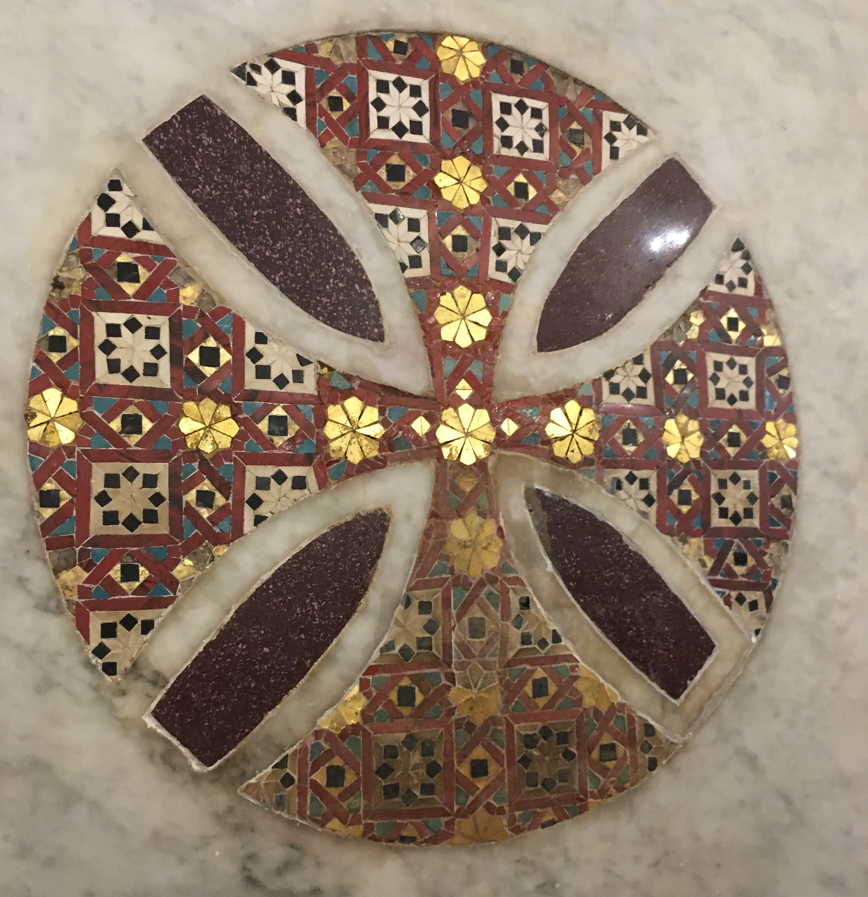
Successors of Roger II continued to be inspired by this building, modeling their own constructions after it, and the scholarly dilemma becomes was the origin of this Sicilian style appropriation? Was he, a man of Norman/French origin, Muslim or Christian? Which group of his subjects were more important to him? Rather than try to definitively answer these inevitably loaded questions, Dr. Khalek argues, “…the emerging Islamic society in Syria was a product of its Christian and Byzantine environment in a fundamental sense, not simply because Muslims were borrowing ideas or blindly grafting onto their own old Arabian practices what other people were doing, but because they were cultural producers [emphasis added] in a world with which they were, and were becoming, increasingly familiar.” 8 Perhaps the inspiration-origin debate distracts from the creativity and motives that are more relevant to medieval studies. The fact is medieval Sicily was a uniquely diverse place situated between Europe and Africa, figuratively and literally. To gain legitimacy, Roger II had to present himself as ruler in a way that each of his peoples (Greeks, Latins, Muslims, and Jews) would have recognized from their preconceptions.9 Similarly, “The early Muslim community, always a minority in early medieval Syria, developed its initial imperial identity in a Byzantine milieu. Muslim architects, artisans, and chroniclers drew upon material and literary forms that were meaningful in the Byzantine world… whether… physical monuments or textual compilations, made use of and elaborated upon images and tropes that resonated with the mixed Christian and Muslim population of the eastern Mediterranean.” 10
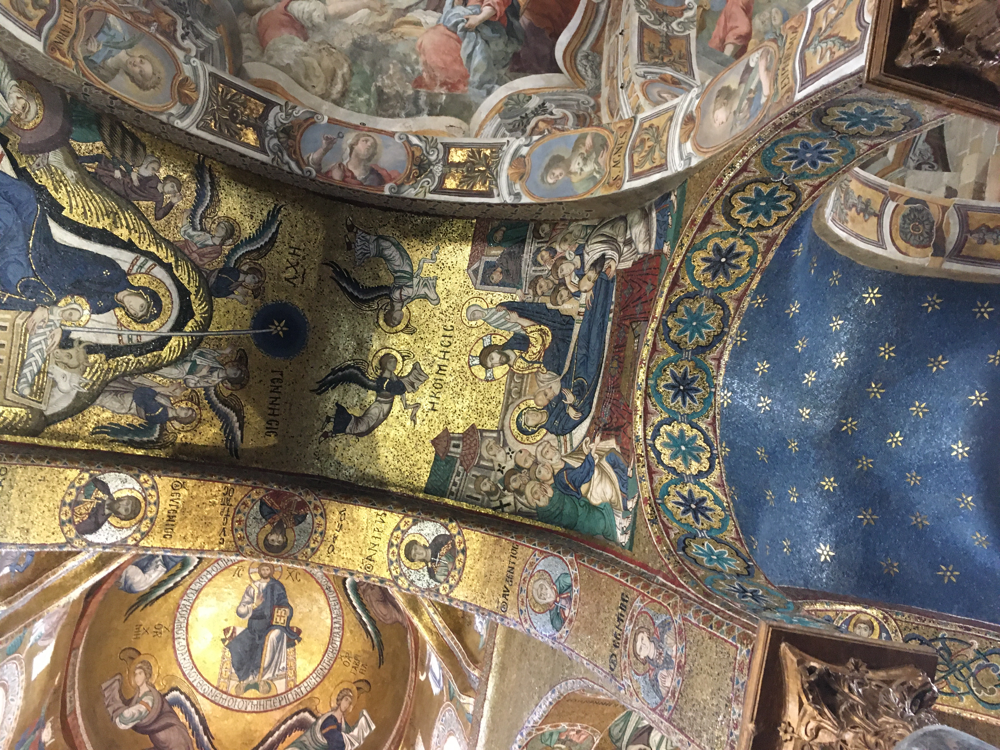
One of the aforementioned later constructions inspired by the Cappella Palatina was the Palazzo Chiaromonte-Steri, a mansion of a wealthy Sicilian family that originally came from Spain.11 Rather than decorate their textured ceiling with reimagined Biblical figures and some go-to fillers of the Islamic palatial cycle like stars, moons, musicians, and dancers as on the muqarnas ceiling; they depict mainly violent clashes of Christian crusaders and Muslims.12 This is particularly ironic and interesting because Sicily’s Frederick II, a descendant and successor of Roger II, was excommunicated three times because of his reluctance to participate in the Crusades.13 The art style may appear “Sicilian,” but the content is not; which in turn suggests that the family had vested interest in rewriting the past, aligning with the new Aragonese rulers who succeeded Frederick II, and making the country seem as if it had been eagerly Christian all along. Dr. Kristen Streahle of Cornell writes, “[By p]erpetually subjugating their enemy on the ceiling, these crusaders effectively displace historic papal hostility towards the island [including an eventual Crusade to the island itself] in the thirteenth and fourteenth centuries.” 14 Dr. Khalek cites a similar example: “…it remains unknown whether [the leader of the Umayyad caliphate] himself actually had any interest at all in curtailing the religious presence of Christians in the cities of Syria so soon after the seventh-century conquests, it is clear that later Umayyad caliphs and the scholars who wrote about them did have a vested interest in deliberately fashioning and refashioning memories of Christian-Muslim life in early Islamic Syria.” 15 In this analogy, the first caliph is to Frederick II as the later caliphs are to the Chiaromonte family.
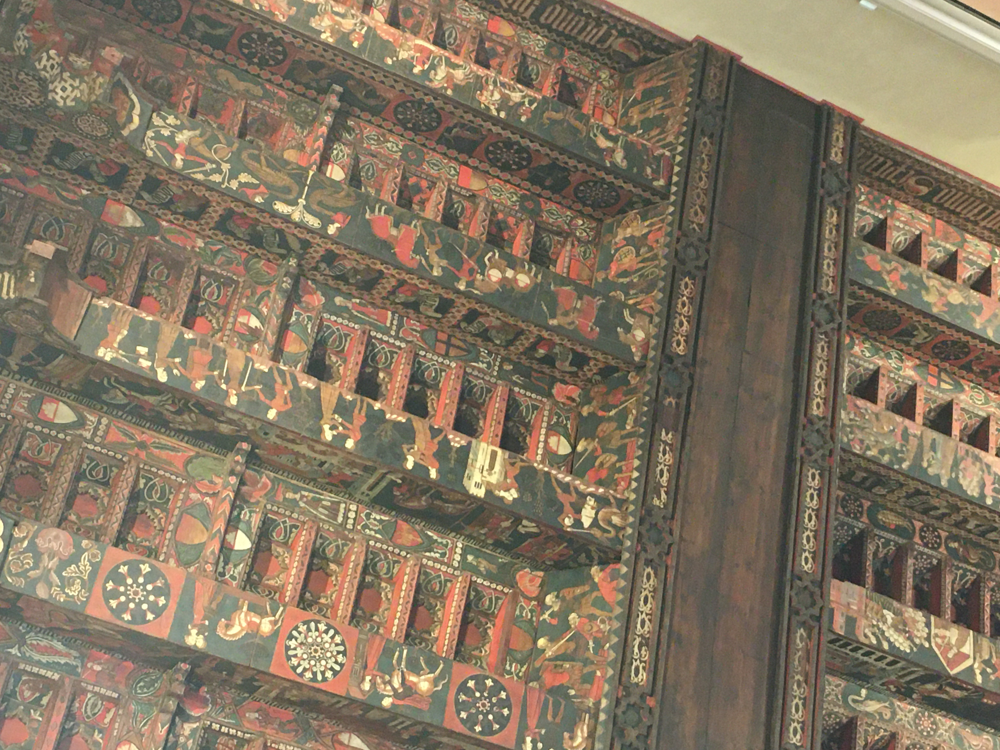
The debate that arises here is whether the focus was really on the formation of a firmer Christian religious identity or for the more practical reason, again, of amassing power. Dr. Khalek discusses the numismatic reforms of the Umayyads, how “…figural iconography’s replacement with purely calligraphic and allegedly more ‘orthodox’ decoration is generally seen as proof of a Muslim desire to erase and replace Byzantine models. One gets the sense that earlier… caliphs would have taken such measures much sooner if only they [could]… in fact, ‘on the economic side, the reform was not as all revolutionary but highly pragmatic.” 16 It was indeed highly pragmatic for the Spanish family to align with the pope and Aragons at this time, as they could (and did) gain power and influence. Another distracting debate is what Dr. Khalek calls “[a]n attentiveness to certainty.” 17 Chiaromonte influence blurred the history of the island’s Muslim and Jewish populations as the Inquisition they supported took effect (a jail was even in the backyard of this palazzo), and scholars often get caught up in disagreements over how much we can “know” from problematic, biased sources such as this one, which Dr. Streahle says was preserved because of its magnificence and creator’s influence.18 “…[M]ost contemporary scholars have placed at least as much emphasis (if not more) on confirming or discerning facts as we have on asking interesting interpretative questions.” 19 Perhaps a more productive approach is to acknowledge the incomplete nature of surviving evidence and move on. If the Steri survived because of humanity’s infatuation with the lives of the wealthy, we know we are missing accounts of marginalized civilian lives, and we know we cannot construct what medieval Sicily “was really like” for all who experienced it. We can instead focus on the brilliance of the multicultural artifacts that somehow were created and did survive and “try to situate those examples within a broader view.” 20
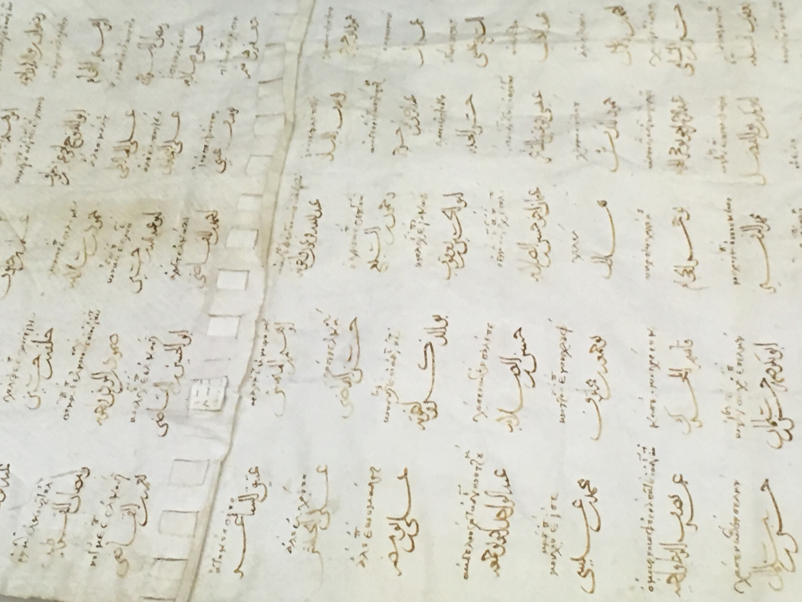
Medieval Sicilian constructions are “concrete examples of cases that attest to the continuities and the changes” of identity development in the period.21 The diverse peoples who cohabited the island obviously influenced and inspired each other just as the people of Syria in the time of the birth of Islam. For the scholar to seek to categorize their experiences without significant qualification yields logical problems.22 A more advantageous process is to acknowledge the lack of surviving evidence and the fact that what did survive was likely due to its monetary and religious value, the latter of which must be mentioned as inextricably linked to the former. By cutting through certainty debates, we can transcend minutiae that we have no way to “prove” and instead get to the complex questions of how ancient peoples negotiated who they were in conversation with their neighbors in a way that is relevant to our globalized, divisive world today. Diversity is not new, and it is the scholar’s responsibility to find this precedent and a way to extrapolate enough from whatever survived attempts to erase it.
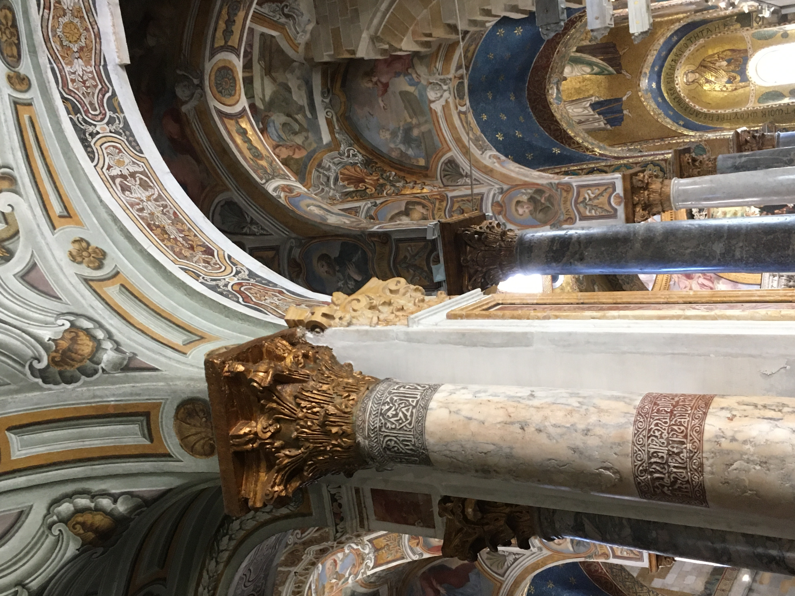
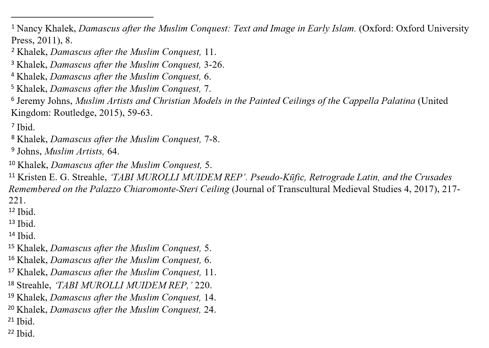
This week I learned that the history of Arabs in Sicily is not just an overexaggerated blip that’s been blown completely out of proportion because it’s really cool. It is really cool, and I was expecting exaggeration just because of that. But these articles talk about how there weren’t just isolated communities of Latin and Greek Christians v Muslims, but rather that they interacted intimately, trading ideas and influence. One example of this is when they said Christian women veiled and wore elaborate jewelry as Muslims at that time did. Another was the census document showing that the people of Celafu spoke Arabic better than Greek, even if they were Christian. However, the two also competed with each other, usually coldly such as when Amatus of Montecassino wanted to build bigger churches to overshadow the central Palermo mosque. Having not encountered a story like this before where two religious groups had to mingle within a small region, I assumed the Jewish population would be equal to them and also “competing.” Instead, the “gentiles” teamed up to look down on them. Obadiah of Bertinoro, a well-off Jew from the northern part of Italy, seemed to share my surprise that they were living so poorly.
I think the confusion over the rosy, everyone-got-along perception came from the fact that the two’s visual language of power played off each other. The Zisa palace and the Cappella Palatina have mixed symbols and art techniques from the two cultures so much that it seems like a pure, stunning positive. Since that is what has lasted, that’s the impression. But some details would stand out to one group, others to others, in turn communicating different things from the king (often literally saying different things in quadrilingual translations). For example, the garden that Muslims would recognize from the description of paradise in the Qur’an, that would have just seemed paradisiacal but not specifically relevant to the Christians. The takeaway seems to be that since the nearby Muslim empires were so rich and established, the king wanted to emulate them and also prove he can afford their expenses, in turn creating atmosphere where minority Muslims could have some respect. Some. Because as Johns noted on page 294, the fine for the murder of a Jew or Muslim was half the price of a murdered Christian. And sure, Roger was decent enough to let a case be tried against one of his family members from a group of Muslims who thought she had violated one of their Islamic land laws… would they have ever had a chance winning?
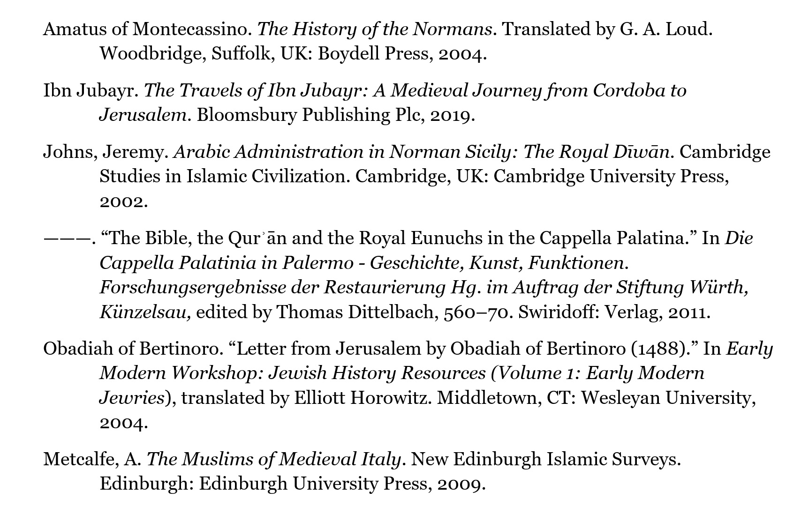
This week, I understood Khalek to be cautioning scholars that they should not allow a primary source’s embellished nature to overshadow everything it may have to offer. There is limited material from the early Islamic period, so much so that it’s hard to draw a line around when it begins and what is included in Islamic. And yes, the surviving legends may be at times unbelievable. The educated few writing these wanted them to be awe-inspiring, rosy, and redacted where necessary to attract people to their system’s ideas. But page 13 called this scholarly persuasion a “preoccupation with source criticism,” to which I replied in my comments with a quote from Disney’s Brave, “Legends are lessons: they ring with truth.” Scholars are the exact people smart enough to be able to read taking grains of salt, but she said they divide into those who think we can know nothing, everything, or hopefully something. Page 22: “Anachronisms in our material(such as the obvious reference to the crusades… diminish not…the potential historicity of the material.”
The Sizgorich reading went into more depth on the scholarly dilemma of what I just called “drawing a line” around a group. How do religious groups determine who they are versus others? How do we determine now, looking back in hindsight? If the people didn’t have a compelling answer, how would they attract more followers? The prophets did not necessarily leave them instructions for how to answer: “The baffling task of explaining those consequences was left to men and women who were not prophets, however, and who necessarily drew upon their environmental for potent signs and symbols to make the consequences of Muhammad’s revelation comprehensible for themselves and their descendants,” (page 166). It seems both Christianity and Islam got their jump start from extremely pious, ascetic, devoted individuals. Those who would engage in militant piety and seek martyrdom were respected within the group even when that group interacted intimately with the “Others.” I think it comes down to people wanting to feel safe but also special. Religion can help them feel safe, if you can have a semblance of your afterlife future; and having different, strong beliefs can make you feel special and empowered. I’m reminded of the anecdote of the Muslim warriors slashing silk pillows because that luxury didn’t matter to them anymore—they felt safe, special, and empowered. So how do the scholars determine who is that if we only have tales of these extreme situations?
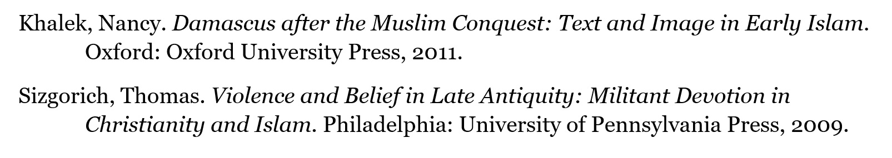
The theme of this week seemed to be the strategic techniques that various groups employed to make their spaces appear more divine and powerful. Gerstal talked about how the architecture of the churches amplified and echoed singing human voices to create the illusion of angels singing “an octave higher” with them. This helped the audience feel as if a tunnel had opened through their medieval conception of the cosmos (the class drawing with bitter cold), in turn letting them temporarily commune with the One. This created a sense that this was then only possible in a liturgical space funded by a monarch, corroborating the monarchy’s authority. Johns similarly talked about the muqarnas ceiling and other influences in the Cappella Palatina as a symbol of Roger’s wealth and power, that he could employ Muslim traveling artisans to create this for him. On page 65, “…one of the most characteristic features of the visual language of the new monarchy was the deliberate and, indeed, the polemical juxtaposition of the three main cultures of the kingdom—Arabic, Greek, and Latin.” The Arabs in his kingdom could then perhaps see their king aligned with this familiar symbolism and recognize his rights over them. Visiting dignitaries would have been able to read the Arabic mosaic around the door and get an intimidating sense of this unique power that rules over various coexisting groups.
The Plato and al-Ma’arri readings were instead more philosophically focused. The former discussed classical mythology’s concept of love, how it is not black & white but focused on getting what is within your soul needing to be shared out into the world. I found our class discussion on Neoplatonism applicable to the aforementioned descriptions of the churches — if medieval people believed all they encountered were clues from God, then in that context, any symbols from other religions could be read into their own as clues that other groups interpreted “wrong.” The latter reading by contrast gave a glimpse into the flaws in the Islamic conception of paradise. Unlike some other religions, Islam imagines what the afterlife will look like in detail, in spite of the plethora of logical problems and gaps that result. From al-Ma’arri’s story however, we can see that King Roger was pretty successful creating that “paradise” on Earth, with his detailed gardens and “black-eyed” maidens, air-conditioning and exorbitant wealth. It would have again communicated to the Muslims under his reign that he is worthy of awe, while the Christians would have gotten that sense more from the glittering gold mosaics of Jesus putting a crown on his head in the vestibule of the La Martorana.
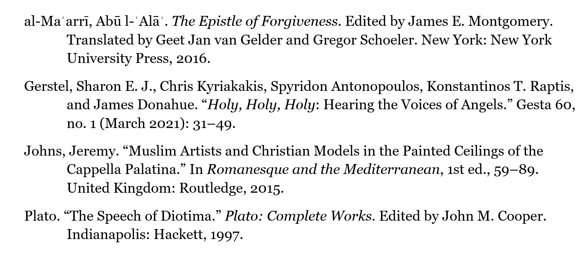
This week, I understood David Nirenburg to be explaining how Jews, Christians, and Muslims all function in a contradictory state of neighborliness. On one hand, all their scriptures literally say something akin to the ubiquitous Jesus quote “love they neighbor as thyself.” On the other, they also all criticize loving your neighbor too much… yielding something confusing and contradictory that the believer is forced to grapple with themselves. There’s enumerated stories of violence against each other that they hold in high regard. This happens whether they are literal neighbors of close proximity (as in Spain and Sicily) or more physically-distanced neighbors of thought. They’re always neighbors in thought—they evolved out of each other and so now have to try to distinguish/draw lines around themselves in the ways we discussed last week. I found interesting his comment that knowing more about each other wouldn’t necessarily solve the civility problem. The Muslims were very well-versed in the Hebrew text when they had that word play example on page 5, when they changed a hear and obey quote to hear and disobey. It seems like a petty jab that they wanted people to notice. Overall, the message is that these “neighbors” experience the full range of neighborly interaction, from intimate and positive to hostile and petty. We have to expect that and as scholars, not take the sentences in their scripture at face value.
The Flood excerpt by contrast was more focused on trade and movement interactions rather than neighbors-at-home interactions. Residents versus tourists, if you will, and how the act of visiting brought influence from other cultures. On page 7, “…the texts acquired from India and other lands by the Sasanian kings of Iran were reportedly deposited in the royal treasury with more material riches.” It reminded me of the Qur’an inscription on the column of the Christian church here. The scholar can either be very confused by this or elevate their mindset. Foreign stuff is fascinating, and nomadic peoples will want to implement its inspiration back home. They will read it into their situation and imbue it with new personal meaning, like my well-traveled, Christian aunt who has a Buddha head fountain in her apartment vestibule. Flood submits that we should consider cultures less by the “roots” in their place of origin and more by the “routes” they traveled before adopting something back home, because that explains why they are interconnected and yet still somewhat distinct.
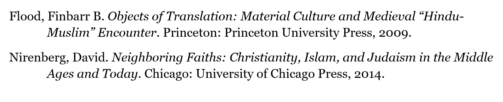
I'm having difficulty articulating an overarching theme of this week's readings, so I'm going to discuss them individually and see if that elucidates one. Boccaccio and al-Jawbari wrote entertaining stories of “charlatans” con-men. The former seemed a fictitious tale of a friar who tricked a crowd into believing he had valuable Christians relics. Written during a period of plague and hardship, it showed that medieval people had a lighthearted side like modern people. The latter was an exposé on the ways of certain shaykhs (what I would call early magicians) who used science and deception to convince people of their power. Whether they used science or eloquence, the similarity is that the tales call into question why we respect certain people as friars/shaykhs/holy representative figures. Does their charisma and selfish, monetary intent disqualify them from respect? How do we expose who is a false representative? If Friar Cipolla brought those people peace of mind before the festival of St. Lawrence… if the “fake” shaykhs bring people awe and hope when bending trees… does it matter?
Streahle wrote about the paintings on the ceiling of an aristocratic, Sicilian family’s mansion. They show Christian crusaders massacring Muslims, which was not what really happened. The island under King William II was far from eager to get involved in the Crusades, so the painting reimagines history as the originally Spanish family would have preferred it.
Bashir (in this class) discussed the role of historical fiction in conjunction with raw history. Sometimes all that survives from a period are things like dates phenomena occurred or the facts/figures of casualties, expenses, etc. "...a key trick involved in creating successful historical fiction, which allows an author to fill historical time with representations of matters such as emotions, inner thoughts, and interactions between people that cannot be substantiated through evidence." When such details are lost, it can be difficult to understand why people would have reacted to phenomena in whichever way. The most effective approach to learn why can be to put yourself in their shoes and “explore” their world through writing. There is a ubiquitous piece of writing advice, “write what you know,” that means the historians with significant knowledge of these surviving bits may often be the best candidates for such fictional exploration, as their familiarity with the period will yield a closer-to-accurate depiction. While it may seem counterintuitive for them to entertain things that are entertaining and likely untrue, only by considering lots of sources and ideas can we determine an acceptable, reasonable truth.
So, I guess the overarching theme is entertainment and its role in history. The answer to me is that if something is not entertaining enough, it will not be remembered, and it will not get the funding to be researched. Also, the study of religion is not pure history: it is a study of people’s beliefs and identities, which is an inherently more fictitious area. Narratives, whether written or visually painted, are vital to aid this understanding.
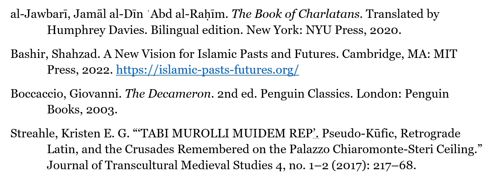
Eastmond’s account of the life of Tamta, a medieval Georgian woman and daughter of a royal elite military figure who was a pawn passed around to numerous Middle Eastern ruler husbands, demonstrates the concepts of transculturation and coproduction discussed last week. The societies/kingdoms interacted with one another frequently, often through raids to try to expand boundaries and enforce nationalistic pride. On page 4, “Ivane’s [her father’s] capture at Akhlat in 1210 took place during the annual Georgian summer raids that sought to extend Tamar’s territory south and west into Greater Armenia and Anatolia, or south and east into Iran. Akhlat was an important military goal because of its strategic location…” A byproduct of expanding territory is absorbing new groups of people and making identities more complex. Tamta’s identity as described on page 7 “as a Christian wife in a Muslim court made her vulnerable.” Interestingly, she got to rule over a region for a significant period of time, and the lives of minority Christians got better under her reign. The fact that one woman embodies the complexity of identity negotiation and yet was also so sparingly documented (as a female, she is not often discussed in the histories but in passing and through male voices) is an extreme example of a common problem to the religious scholar. How are we supposed to understand beliefs without identity, without clear identities to correspond with clearly divisible faith groups? The answer is that it is not clear and so should not be represented as such, but with all the details that can present a nuanced complexity.
Bashir’s works focused on other anecdotal evidence of similar problems of the scholar. The monument that was relabeled as in a Hindu style instead of a newer Islamic style shows how scholars have power that needs to be wielded carefully. “In response to this [aggravation of the Muslims], the architects who were involved in the research quickly explained that the focus… was the architectural form… and this formal architectural analysis had nothing to do with the rituals surrounding the monuments.” Yet, the simple-minded need to label and categorize can do great insult to the identity definition of certain groups. Islam is a newer religion than Hinduism: many things they use to define themselves would have evolved out of or at least been influenced by existing forms from their predecessors. Trying to trace back to the first example of a style may be counterproductive. In the slave trade example, labeling all the victims as Africans disregards the distinct differing identities of the imported peoples. I think it makes them seem like a supply of something, a commodity, all the same and illiterate. In actuality, there were people like Omar Ibn Said who were very educated Muslims. Or was he secretly Christian—does it matter? Can’t he have a simultaneous identity, however he as an individual would like to describe? “…the most productive way to see Omar Ibn Said’s life is to not pin him as a Muslim or a Christian.” Lastly, with regard to the “discovered” frescoes in the desert, well local tribes were already well familiar with them. They were already used as a significant cultural space. Why label it as being “discovered” only when by the scholarly community? Why should scholars privilege their interpretation of what such artifacts mean to people when peoples already have their own interpretation?
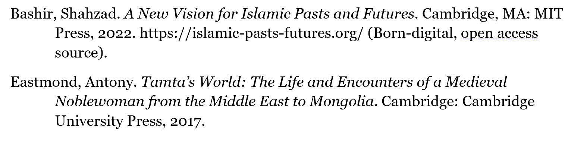
Project website by a James Madison University Honors student. Legal
Copyright 2023-2024 MCL, All Rights Reserved.